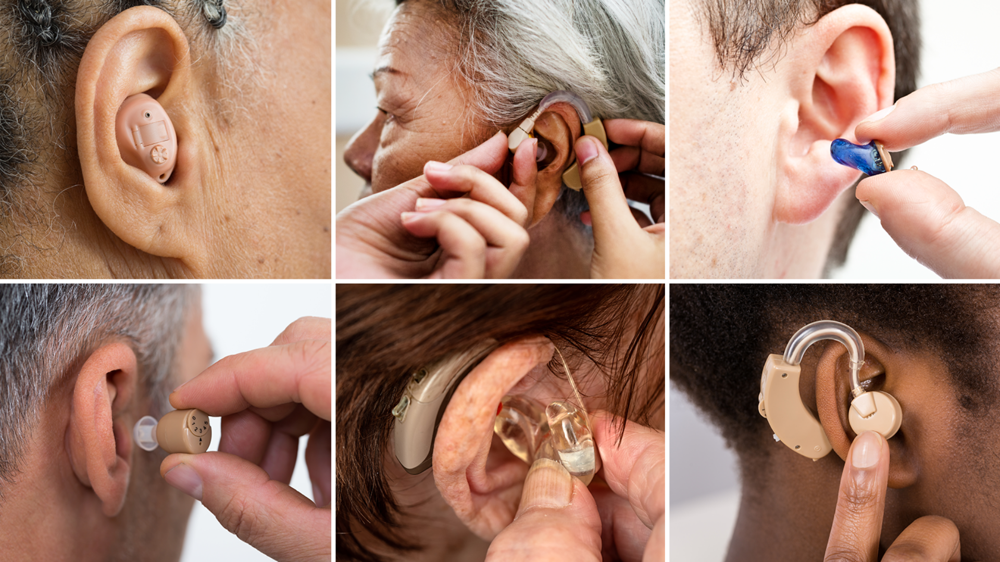

{%load static%}
Acerca de || Enfermedades Auditivas
Acerca de las Enfermedades Auditivas
El oído es el órgano que nos permite percibir los sonidos de nuestro entorno y es el que se encarga de controlar el equilibrio.
Existen multiples enfermedades que pueden afectar este órgano ya sea de manera externa o interna.

Las causas de estas enfermedades van desde la exposición cercana a un ruido muy fuerte, hasta la herencia genética.
Los tratamientos son muy variados y en algunos casos puede no existir cura o se emplean procedimientos muy complejos. Se recomienda siempre consultar a un médico profesional.